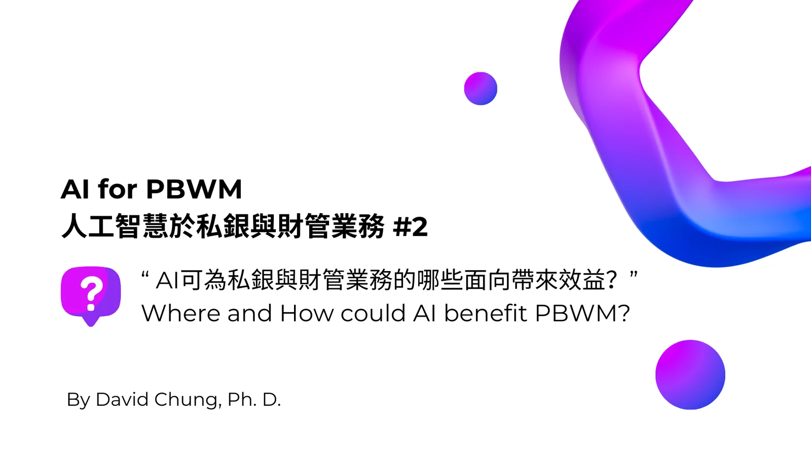
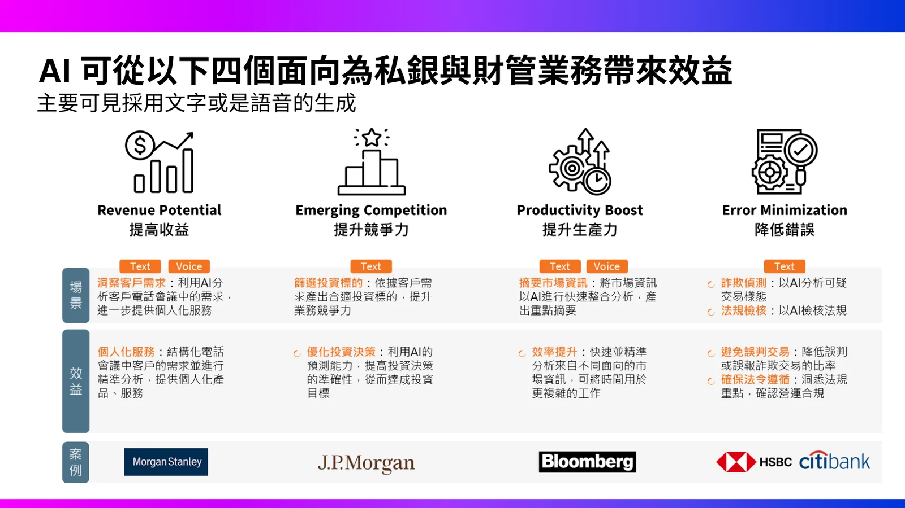
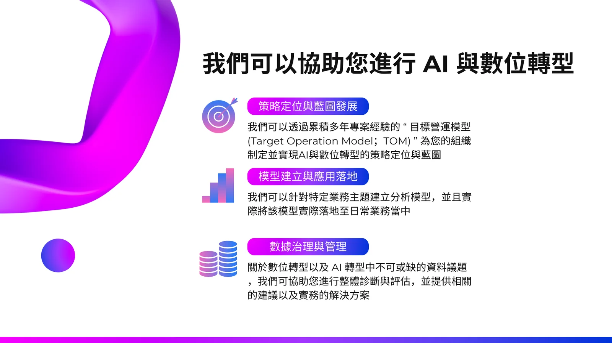

在本系列文章中，我們將深入探討人工智慧（AI）如何變革私銀與財管業務。而本篇文章將聚焦 到底AI技術可為私銀與財管業務的哪些面向帶來效益？
根據我們的觀察，對於財富管理業務來說，至少可以從四個面向帶來效益。
- 提高收益：例如利用AI分析與客戶聯繫的內容，進一步更細微地瞭解客戶的需求狀態以提供個人化的服務以吸引客戶
- 提昇競爭力：例如利用 AI 技術來針對不同客戶產出個人化的投資建議，協助客戶差異化，也提昇了金融機構自己與同業的差異化
- 提升生產力：例如將金融市場相關資訊透過 AI 進行更完整且快速的整合分析，更有效率地提供資訊給客戶或研究部門參考
- 降低錯誤：例如透過 AI 技術分析可疑的交易樣態或是不尋常的理專行為進而提早進行防範。
上面四個面向均已有市場上的同業案例可以參考，我們會再後續的文章中進行介紹。
In this series of articles, we will delve into how artificial intelligence (AI) is transforming private banking and wealth management businesses. This article will focus on the aspects of private banking and wealth management that can benefit from AI technology.
Based on our observations, AI can bring benefits to wealth management businesses in at least four areas:
- Increasing revenue: For example, using AI to analyze the content of interactions with clients, gaining a more nuanced understanding of their needs to provide personalized services that attract clients.
- Enhancing competitiveness: For instance, using AI technology to generate personalized investment advice for different clients, assisting them in differentiation, while also enhancing the financial institution’s differentiation from competitors.
- Boosting productivity: For example, using AI to comprehensively and quickly integrate and analyze financial market information, providing information more efficiently for clients or research departments to reference.
- Reducing errors: For instance, using AI technology to analyze suspicious transaction patterns or unusual behavior by relationship managers to enable early prevention.
There are already market cases for each of these four areas, which we will introduce in subsequent articles.